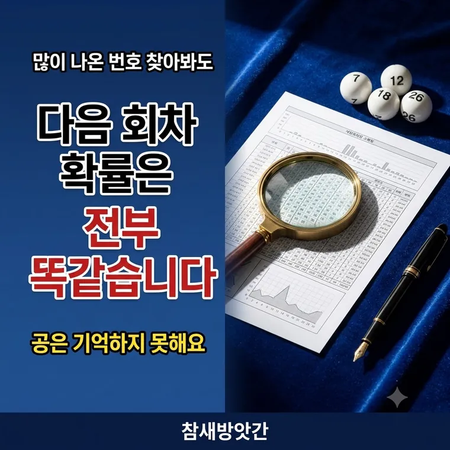

로또 번호 통계 분석: 1,244회 출현 횟수로 보는 수학적 무작위성
통계를 보면 어떤 번호는 180번 넘게 나왔고 어떤 번호는 150번쯤 나왔습니다. 공이 치우쳐 있는 걸까요. 그렇지 않습니다.

평균은 166번입니다
한 회차에 공 6개가 나옵니다. 번호는 45개입니다. 그러니 한 번호가 뽑힐 확률은 매회 45분의 6입니다.
각 번호가 평균 166번쯤 나왔어야 한다는 뜻입니다.
그런데 실제로는 180번을 넘긴 번호도 있고 150번 근처에 머문 번호도 있습니다. 차이가 30번쯤 벌어집니다.
동전을 1,000번 던져도 500번이 안 나옵니다
동전의 앞뒤 확률은 정확히 반반입니다. 1,000번 던지면 앞면이 500번 나와야 합니다.
그런데 실제로 던져보면 520번, 480번처럼 어긋납니다. 동전이 치우쳐서가 아닙니다. 무작위란 원래 그렇게 흔들립니다.
로또도 같습니다. 1,244회는 45개 번호가 고르게 퍼지기엔 아직 적은 횟수입니다. 차이가 나는 게 정상입니다.
공은 지난주를 기억하지 못합니다
로또 추첨은 독립시행입니다. 지난 회차 결과가 이번 회차에 아무 영향을 주지 않습니다.
자주 나온 번호라고 이제 덜 나올 차례가 된 게 아니고, 오래 안 나온 번호라고 나올 때가 된 것도 아닙니다.
매회 45개 공은 똑같은 상태로 추첨기에 들어갑니다. 각 번호가 뽑힐 확률은 언제나 45분의 6입니다.
큰 수의 법칙은 흔히 오해됩니다
"많이 하다 보면 평균에 가까워진다"는 말을 들어보셨을 겁니다. 맞는 말인데, 무엇이 가까워지는지가 중요합니다.
가까워지지 않는 것 — 출현 개수 차이
회차가 늘수록 각 번호가 차지하는 비율은 45분의 1에 가까워집니다. 하지만 번호끼리의 횟수 차이는 오히려 더 벌어질 수 있습니다.
1,000회일 때 20번 차이였던 것이 10,000회에서는 50번 차이가 될 수 있습니다. 그래도 전체 대비 비율로 보면 훨씬 고릅니다. 둘은 다른 이야기입니다.
그럼 통계는 왜 보나
통계는 지나간 기록입니다. 1회부터 지금까지 무슨 일이 있었는지 모아둔 것입니다.
앞으로 무엇이 나올지는 알려주지 않습니다. 각 추첨이 독립적이니 과거 기록에서 다음 번호를 끌어낼 방법이 없습니다.
대신 무작위가 실제로 어떻게 생겼는지를 보여줍니다. 교과서에서 읽는 확률 이야기를 1,244회치 실제 데이터로 확인해 보는 셈입니다.
자주 나온 번호로 만든 조합이든 한 번도 안 나온 조합이든, 다음 회차에 맞을 확률은 똑같이 8,145,060분의 1입니다.
이렇게 읽으면 됩니다
숫자가 들쭉날쭉한 것을 보고 의미를 찾으려 하면 없는 규칙이 보입니다. 사람 눈은 무작위 속에서도 무늬를 만들어내기 때문입니다.
통계는 그동안 이랬구나 하고 보는 자료입니다. 그 이상으로 쓰려고 하면 숫자가 말하지 않은 것을 듣게 됩니다.
자주 묻는 질문
그렇지 않습니다. 로또 추첨은 매회 독립시행이므로 과거 출현 횟수는 다음 추첨에 영향을 주지 않습니다. 모든 번호는 매회 똑같이 45분의 6의 확률을 가집니다.
무작위 추출에서 자연스럽게 생기는 흔들림입니다. 동전을 1,000번 던져도 앞면이 정확히 500번 나오지 않는 것과 같습니다. 1,244회는 45개 번호가 고르게 퍼지기에는 아직 적은 횟수입니다.
비율은 이론값에 가까워지지만 횟수 차이는 오히려 더 벌어질 수 있습니다. 큰 수의 법칙은 비율이 수렴한다는 뜻이지 개수가 같아진다는 뜻이 아닙니다.
알 수 없습니다. 각 추첨이 독립적이라 과거 기록에서 다음 회차 번호를 끌어낼 방법이 없습니다. 통계는 무작위가 실제로 어떻게 나타나는지 보여주는 기록입니다.